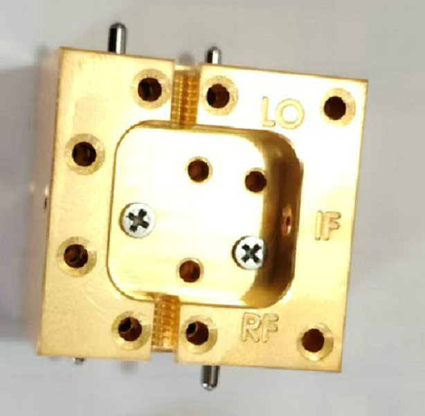
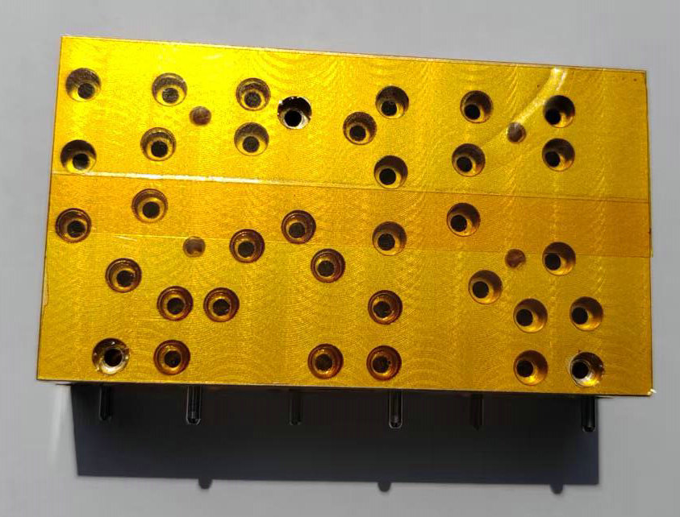
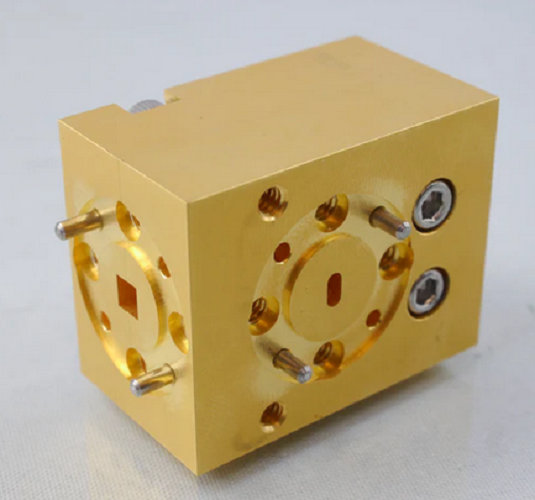
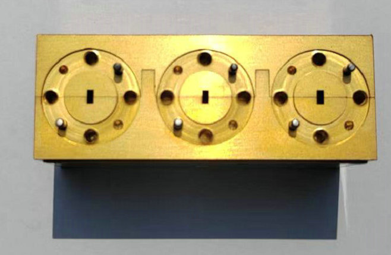

what's MMWV(mmwave) waveguide RF components USA WR28, WR22, WR15, WR12? where's submillimeterwave cavities WR-3, WR-4, WR-5, WR-6 manufacture? how to buy mini Terahertz RF device WR8, WR10, WR2, WR2.2? 888888888888888888888888888888888888888888888888888888888888
supplier of microwave waveguide(attenuators,antennas, amplifiers, splitters, adapters, combiners, dividers)! manufacture of mmwave component(ulators, diplexers, isolators, multipliers, shifters, detectors, oscillators)!


We are a dedicated manufacturer of high‑accuracy waveguide components, serving the microwave, millimeter‑wave (mmWave), submillimeter‑wave, and terahertz (THz) frequency bands. Our business is simple: we produce individual piece parts exactly to your engineering drawings. We do not design, assemble, or sell complete RF devices such as attenuators, antennas, amplifiers, splitters, adapters, combiners, dividers, circulators, diplexers, isolators, multipliers, phase shifters, detectors, or oscillators. Those are finished products. Instead, we supply the precision‑machined waveguide elements that make them work—flanges, straight sections, bends, twists, tapers, backshorts, coupling nuts, and custom brackets—manufactured from your CAD data.


What is MMWV? In common industry shorthand, MMWV stands for millimeter‑wave waveguide, referring to standardized hollow metal waveguides used from 30 GHz up to 300 GHz. For example, WR‑10, WR‑12, and WR‑15 are typical mmWave sizes. However, our capability extends far beyond that. We also manufacture components for submillimeter‑wave (300 GHz – 3 THz) and terahertz frequencies, where waveguide dimensions shrink to fractions of a millimeter. Common submillimeter/THz waveguide designations include WR‑3, WR‑4, WR‑5, WR‑6 (covering roughly 170–330 GHz for WR‑3, down to ~110–170 GHz for WR‑6). These sizes demand extreme precision: inner apertures of a few hundred microns, corner radii under 20 µm, and surface finishes better than 0.1 µm Ra.
Because we are a component‑only supplier, you retain full control. You send us a drawing—whether for a 25 mm long WR‑3 straight section with UG‑387 flanges, a WR‑4 E‑plane bend, or a custom THz waveguide taper—and we machine it from copper, brass, aluminum, or invar. We do not add any “black box” electronics or tuning elements. What you specify is what you get: a precisely dimensioned metal part, ready for you to integrate into your own attenuator, antenna, multiplier, or detector assembly.
By separating component fabrication from device design, we help you reduce costs, shorten lead times, and maintain intellectual property. No minimum order is required; prototypes and production runs are both welcome. For any microwave, mmWave, submillimeter‑wave, or THz waveguide component—including WR‑3 through WR‑6 and beyond—send us your drawing. We will deliver the parts, not the finished device.